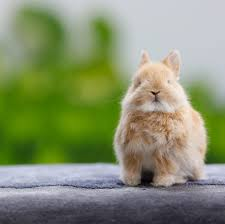
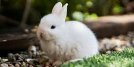
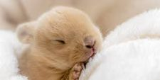
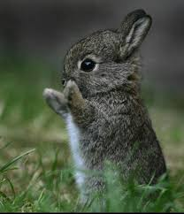

Our bunnies
We have very cute, loving and very unique bunnies from the globe
This is Nibbles
Gender: Female
Age: 3 months
Color: golden fluff
About: She loves to run around and she is very adventurous and she likes hiding under furniture. She loves nibbling on carrots and cucumbers
This is Snowball
Gender: Male
Age: 6 weeks
Color: White
About: He is a calm little fella who loves strawberries and naps. He loves eating watermelons
This is lola
Gender: Female
Age: 2 weeks
Color: Caramel
She is a new born and she adores sleeping a lot and you would catch her napping in a soup bowel. She loves eating blueberries
This is nuggets
Gender: Male
Age: 1 month
Color: Grey
About: He loves the outdoors and loves eat the lawn. He is good at hiding and he would jump up when he see people, he also loves bananas and hay